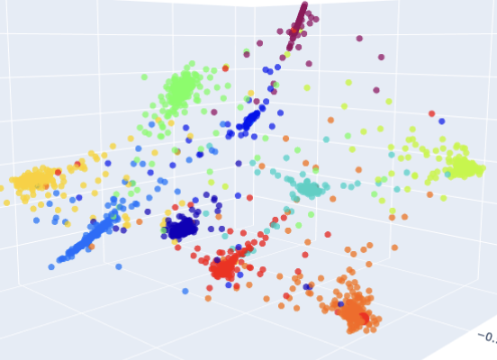
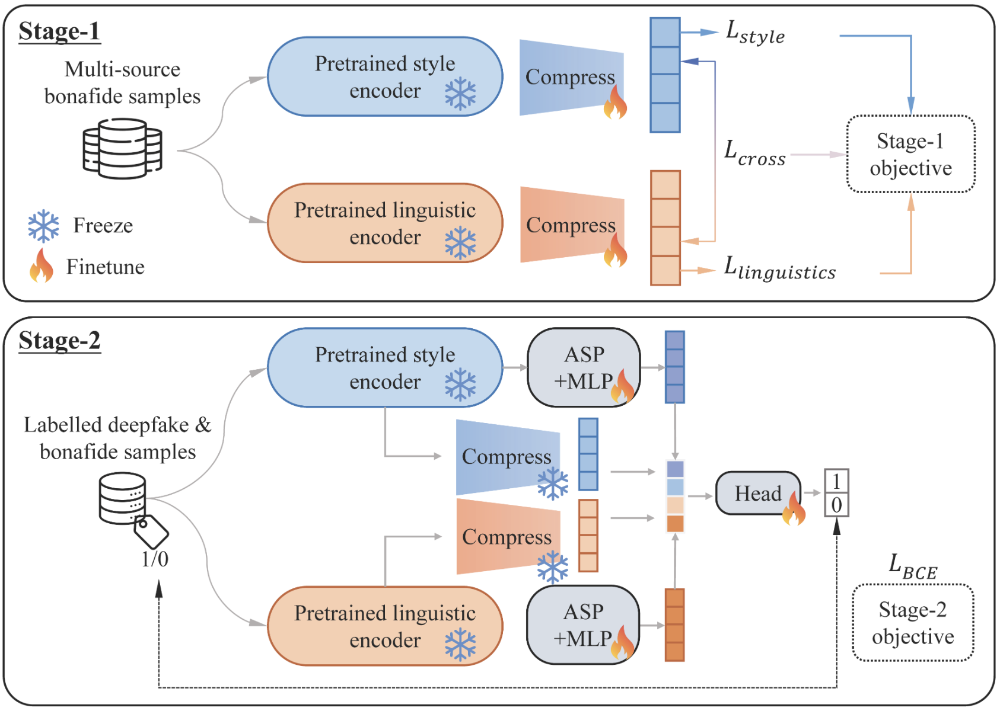
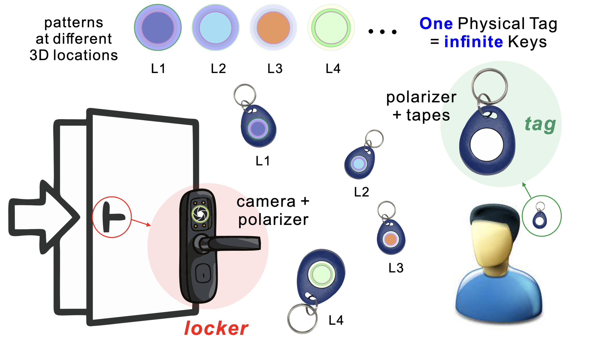

Research

Master's Thesis
Aug 2025–Present
Representation Learning
Supervised Contrastive Learning with Cross-Batch Negatives for Deepfake Audio Detection
Controlled study of cosine vs. geodesic similarity and cross-batch negative scaling (|Q|=2048) over frozen XLS-R-300M. Stage 1: SupCon projection head. Stage 2: linear BCE classifier. Ablations: temperature sweep, queue-size sweep, UMAP geometry. Evaluated across FakeXpose and FamousFigures OOD corpora.
0.25% EER · ASVspoof 2019
8.3% EER · In-the-Wild
0.8% / 6.6% · pooled corpus

Oct 2025
Self-Supervised Learning
Speaker-Specific SLIM Replication (From-Scratch)
From-scratch replication of a two-stage SSL deepfake detection framework using Wav2Vec2 and WavLM backbone variants. Stage 1 learns compressed style/linguistic representations; Stage 2 trains a classifier with waveform augmentations (noise, reverb, SpecAugment). Built per-speaker embedding diagnostics and UMAP/t-SNE visualizations to surface entity-level failure modes invisible in aggregate EER.
Code: Private (ISSF Lab)

IEEE MASS 2025
Oct 2025
Co-Primary Author
Published
ViKey: Secure Door Access Control Using Passive Visible Light Tags
Proposed the first passive visible light tag for door access control, exploiting polarized birefringence in layered transparent tapes to generate 3D position-dependent color patterns as unclonable keys. Conducted a systematic case study of tag shape, tape layers, and stacking sequences, and designed a real-time CV pipeline using per-channel SIFT, FLANN matching, RANSAC geometric verification, and temporal consistency checks achieving 90.5% accuracy at 0.5m and <100ms latency without any deep learning.
90.5% accuracy @ 0.5m
<100ms latency
$0.20 tag cost